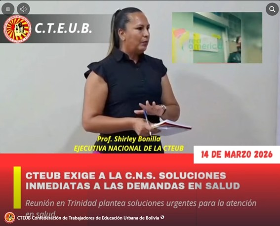
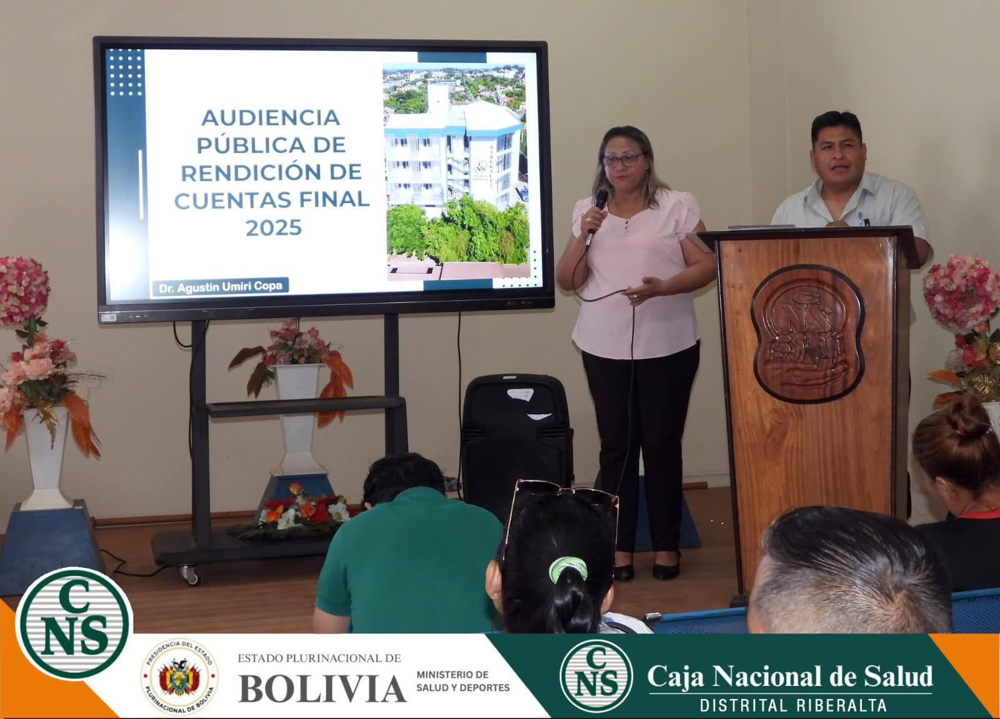
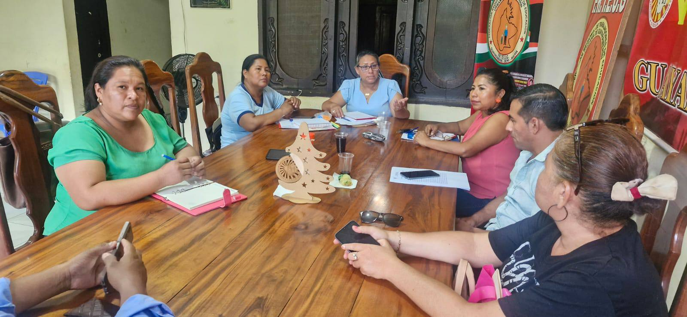

Conclusión del III Ampliado Nacional Extraordinario

Comunicados14/03/2025
Pronunciamiento de la CTEUB frente a la C.N.S.
CTEUB exige Soluciones a la C.N.S. frente a demandas formales ya presentadas, exponiendo los motivos, en una reunion de emergencia realizada este Sabado 14 de Marzo,2026.

Riveralta13/03/2026
Audiencia Pública de Rendición de Cuentas Final-Gestión 2025 de la CNS Riberalta
Se realizó la Audiencia Pública de Rendición de Cuentas Final-Gestión 2025 de la CNS Riberalta , con la participación de la Prof Sarah Verdugo Olmos delegada ante la CSN por la C.T.E.U.B. delegado de la Federación de Maestros Urbanos , control Social, autoridades distritales, personal medico y administrativo. Durante la audiencia se solicitó transparencia en la gestión de los recursos, seguimiento a empresas con deudas a la CNS Distrital Riberalta , soluciones a temas urgentes como medicamentos, reembolsos y suplencias . Asimismo, se transmitieron los reclamos de los maestros de Riberalta, ante lo cual el personal medico y administrativo de la CNS, asumió el compromiso de trabajar para mejorar y optimizar la atención a los asegurados. Estos espacios de rendición de cuentas fortalecen la transparencia institucional y permiten atender de manera directa las necesidades de los trabajadores de la educación y sus familias.

Guayaramerin12/03/2026
Informe CNS
La prof Sarah Verdugo Olmos, delegada a la C.N.S. de la CTEUB. Sostuvo una reunión con el Dr. Paulo Ricardo Guillen Salvatierra, Agente Distrital de la CNS Guayaramerin, Lic Mery Quispe ejecutiva de Guayaramerin y el directorio, para abordar y coordinar soluciones a las principales preocupaciones de los asegurados, entre ellos el abastecimiento oportuno de medicamentos, agilización de pagos de suplencias por maternidad, procesos rápidos de los reembolsos de gastos médicos, así como también hay la urgencia de contar con servicio de hemodiálisis.La C.T.E.U.B. reafirma su compromiso de luchar por una atención de humanidad y calidad.